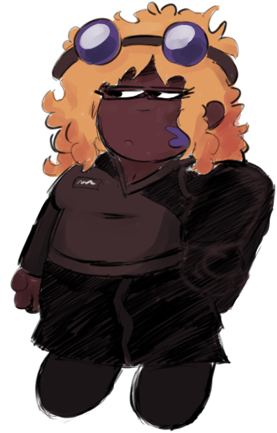

Jane Ashton
Back →
Jane was the captain of the ship Marie II before its crash. She is a more serious leader, putting the safety of her crew above all else. When her son Gumpus snuck aboard the ship, she was very angry. Eventually she came to be happy he snuck onboard, as staying away from your child for over a year would have been very hard on her. Despite this she still worries for his safety, as he tends to be reckless. After the crash, she retains her leadership role, giving people jobs and making sure a proper camp is built for the survivors. She does not trust the alien living among them.
Trivia
- She enjoys pop and classic rock.
- Despite what many might assume, she really enjoys cheesy romance movies.
- As a child, she was very energetic like Gumpus, however as she entered adulthood she calmed down.

Gallery